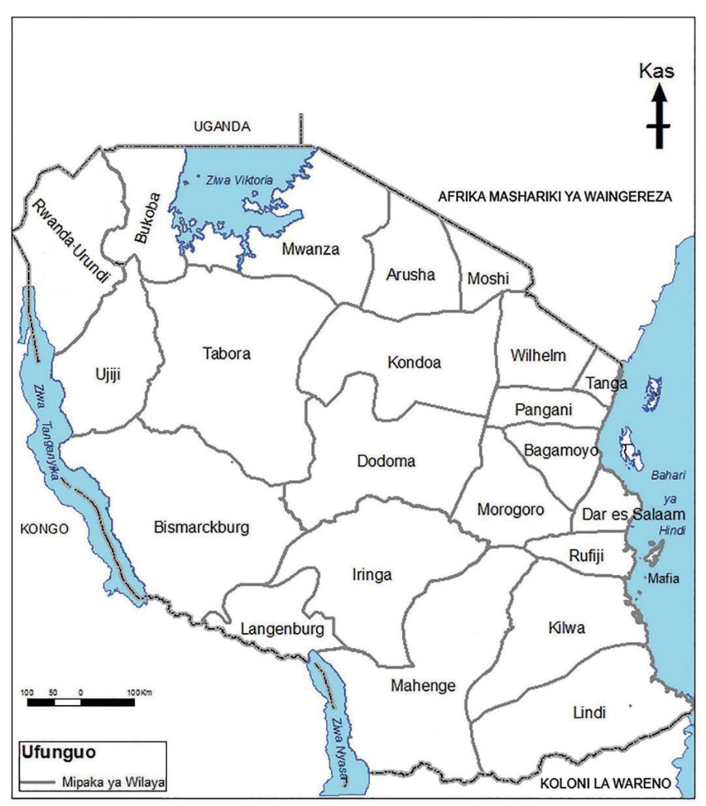

Aidha, wilaya hizo ziligawanywa katika sehemu ndogondogo za kiutawala chini ya uongozi wa maliwali na maakida. Wengi wao walikuwa na asili ya Kiarabu na wachache walikuwa Waswahili wenyeji wa mwambao wa Bahari ya Hindi katika Afrika Mashariki ya Wajerumani. Baadhi ya watawala wa jadi waliendelea kuwa machifu chini ya utawala wa Wajerumani. Wajumbe ambao walikuwa chini ya maakida na maliwali walisimamia vijiji. Kila jumbe alitawala kijiji kati ya vijiji kadhaa vilivyokuwa chini ya akida au liwali kama inavyoonekana katika Kielelezo namba 2. Majukumu ya maakida, maliwali na machifu yalikuwa kama ifuatavyo:
Historia ya Tanzania na Maadili DRS V.indd 6
08/09/2025 10:32